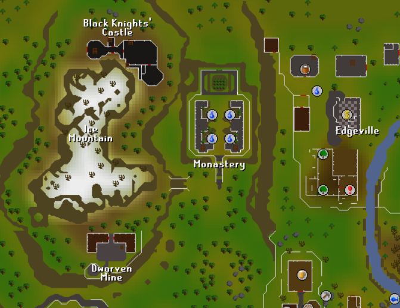
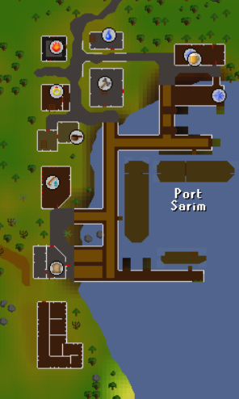
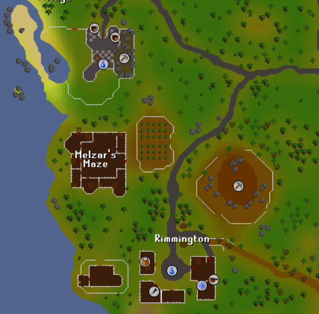
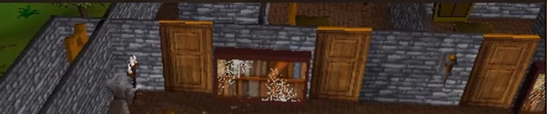
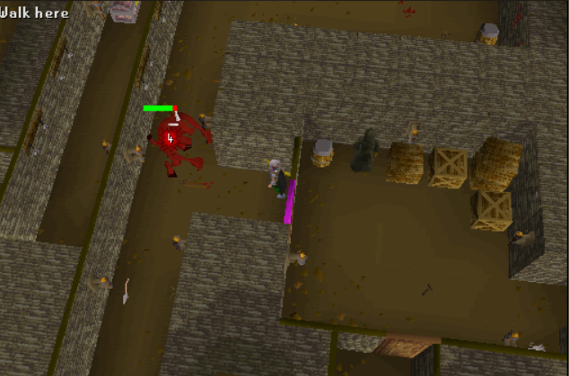
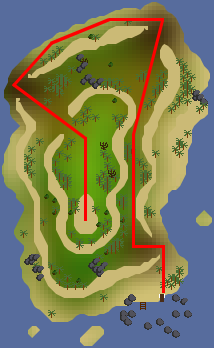
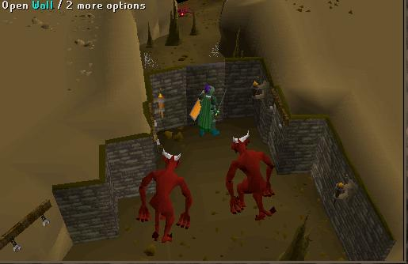
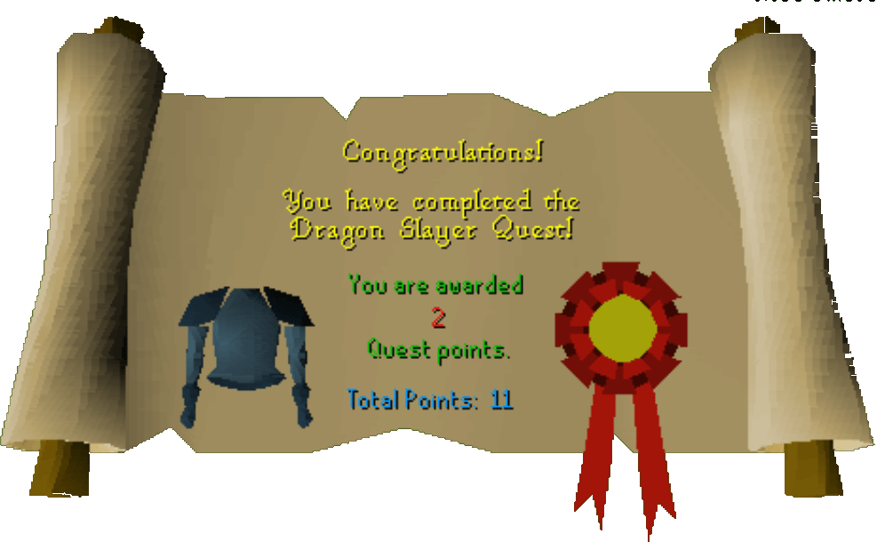

Dragon Slayer
Description: Prove yourself a true hero. Kill the mighty dragon Elvarg of Crandor Island and earn the right to buy and wear the powerful rune plate mail body.Difficulty: Experienced
Length: Long
Items & Skills Needed:
- 32 Quest points to enter the Champions' Guild
- 33 Magic
Recommended:
- 45 Combat
- A friend to bring you more food
Reward: 2 Quest points, 18,650 Strength XP, 18,650 Defence XP. Completing the quest allows you to buy and equip Rune platebody (84,500 gp) and Green Dragonhide Body (10,400 gp) from Oziach.
Instructions:
Enter the Champions Guild, southwest outside of Varrock. You will need 32 Quest Points to enter. Talk to the Champion's Guild master. Ask him about the Rune platebody, and he'll tell you about Oziach.
Go to the house between the fence and the cliff, at the northwest corner of Edgeville, and talk to Oziach.

Ask him about Rune platebody, the Dragonfire Shield, and the map pieces. Be sure to exhaust every dialogue option. He should give you a key to Melzar's Maze.
Thalzar's Map Piece
From Oziach's house, head west toward Ice Mountain with your Silk, Mind Bomb, Unfired bowl, and Lobster pot. Go to the Oracle at the top of the mountain to the north. Speak to her about a map piece. She'll tell you about a door in the mines.
Head to the dwarven camp south of Ice Mountain and climb down the ladder into the mines.
Go south past the first minecarts, then east to find a door. Simply, click the door to go inside, and your quest items needed will disappear. Inside, open the chest in the center of the room and search to find a map piece. You must "click here to continue" before it can go into inventory.
Lozar's Map Piece
From the Dwarven mines, leave the room and walk south until you see stairs to the east, and go up. You are now in East Falador.
Walk to the bank and bank everything except your Mage or Range gear, 2,000 coins, some food, Melzar's Key, 3 planks, 12 nails, and a hammer. Also, bring either 10,000 coins or Telegrab runes and a Wizard's Mind Bomb if you need to boost your magic. Bring a teleport to Lumbridge if you wish.
Head to Port Sarim, south of Falador. Enter the jail south of the food shop and find a goblin named Wormbrain.

If using Telegrab, kill him through the bars and telegrab the map piece that he drops. If you don't have at least 33 Magic after boosts, you will have to talk to him and pay him 10,000 coins.
Repairing Lady Lumbridge
While you are here, go to the southern dock of Port Sarim and speak to Klarense, who owns Lady Lumbridge, but ask if he is willing to sell it. Pay him 2k gold for the ship.
Cross the plank to board the ship and climb the ladder to go below deck.
Look just south of the ladder to find the hole. Use your planks on the hole to repair it. Each plank will take 4 nails.
Melzar's Map Piece
If you aren't already prepared, stop by the bank to gear up for combat. Melee is viable, but magic or ranged is recommended for the next part.
Head to Melzar's Maze, which is between the Crafting Guild and Rimmington, and use your key on the door.

Inside, you will see multiple colored doors leading to ladders. You must go through the right sequence of doors to get to the end of the maze. Getting through the door is based on the monsters in the room.
NOTE: Only one specific monster in the room will always give you a key, while the others are just distractions. So, when looking for keys, DO NOT kill one spawn over and over.
Kill giant rats until one drops a red key. Use it on the northwest door, then go up the ladder.
Kill ghosts until one drops an orange key. There are four doors on the Eastern side. In the picture below, the 3 north-eastern doors are visible. Go in the middle one, to the right of the bookshelf.

Kill skeletons until you get a yellow key. Use it on the most southwestern door. Follow the corridor and go down the 3 ladders to the basement until you reach zombies.
Kill zombies until one drops a blue key. Use it on the northwest door.
Kill Melzar the Mad; he will drop a magenta key. Use it on the north door to proceed.
You will now face a lesser demon to obtain your final key. The lesser demon can be safespotted standing near the magenta door you just came through. Kill the Lesser Demon to get the green key. Use the key on the door.

Open and search the chest to get the last map piece. You must "click here to continue" before it can go into inventory. Use all map pieces on each other to form the full map.
The Fight with Elvarg
If you brought your runes to teleport to Lumbridge, teleport to Lumbridge. Otherwise, make your way to Lumbridge. Once at Lumbridge, go into Lumbridge Castle and go up the northern stairs once, and enter the Duke's room.
Talk to the Duke. Ask about a shield to protect against dragons. He'll give you the Dragonfire Shield. It's advised to drop it, get another, and pick up the first one — just in case you die later. You can get as many as you like.
Go to Draynor Village, just west of Lumbridge.
In Draynor, find Ned, who is wearing all blue, either in the house just south of the quest symbol on the map or wandering outside. Talk to him. He mentions he is a sailor, so ask him to sail you to Crandor.
Right-click to use the map on Ned. He'll tell you to meet him at the ship.
Head to the bank to prepare for the boss fight. Bring an Attack & Strength potion, food, emergency teleport (Ring of Dueling is a cheap option, must be unequipped to rub), armor, weapons, and most importantly, your Dragonfire Shield. This boss CANNOT be safe-spotted.
Head to your ship, Lady Lumbridge, go below deck, and talk to Ned. Off to Crandor!
After arriving, the ship will be damaged. Disembark and climb the hill. Follow the map below to reach the center of Crandor, avoiding the King Scorpions and Lesser Demons. Once you reach the top, enter the dungeon.

Inside, dodge the skeletons and walk deeper into the cave. Head south toward the Lesser Demons and look for a "secret" wall with an "Open" command. Your character will memorize this location for future access.
Here is a picture of the wall:

NOTE: If you die during your fight with Elvarg and have unlocked this secret door, you do not need to repair Lady Lumbridge again. Take a boat to Musa Point and go to the Volcano. There is a rope into the Volcano, then the secret door is just north of the spiders. You can now try to defeat Elvarg again.
Re-enter the secret wall and go back north to the East door. Get ready to fight Elvarg, a level 86 green dragon. Drink your Attack and Strength potions, make sure your Dragonfire Shield is equipped, and enter the door.
Protip: Elvarg's max hit if you are wearing the Dragonfire shield is 10. So be sure you eat enough to be above 10 hitpoints at all times. If using melee, best to be on Accurate to hit more often. You can switch to Aggressive to hit harder, but you may not land a hit as often.
After defeating Elvarg, you'll be teleported outside. Congratulations — you've completed Dragon Slayer! Go buy that Rune platebody, you legend.
Finishing Up
If a skeleton attacks you, don't panic. From here, either use your emergency teleport or go through the secret door again just south. Go east to find a rope and climb up.
You are now at the top of Karamja Volcano. Make your way to the dock and leave Karamja. If you cannot afford to pay the toll, pick 10 bananas to fill the crate for Luthas near the dock to get 30gp to afford a trip to Port Sarim.
Speak to Oziach and tell him the dragon is dead. You can now wear a Rune Platebody and Green Dragonhide body!
Congratulations, Quest Complete!

This quest guide was written on RuneHQ by Catherine and Ghou Lies. Thanks to Weezy, firespyrit, evomasta, stormer, DRAVAN, Axelman, Ghou Lies, and Fran 2004 for corrections.
This quest guide was entered into the database on Fri, Feb 06, 2004, at 09:11:17 PM by Chownuggs and was last updated on Wed, Sept 10, 2025, at 12:48:26 AM by Fran 2004.